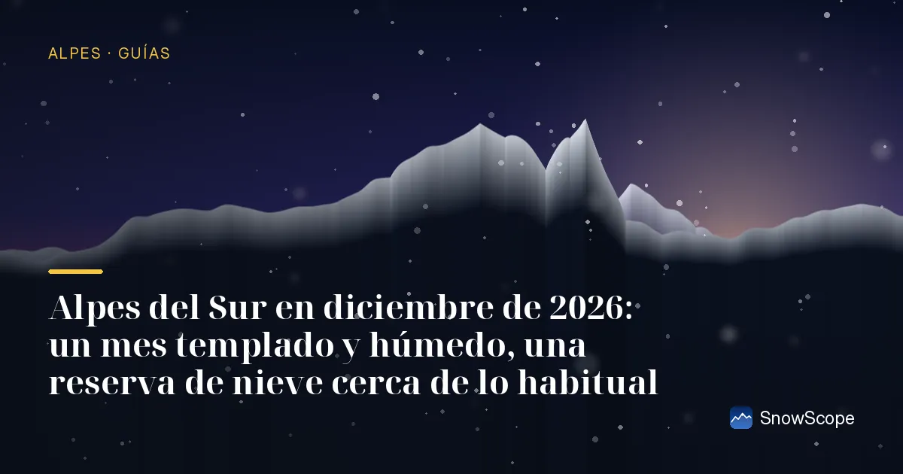

Alpes del Sur en diciembre de 2026: un mes templado y húmedo, una reserva de nieve cerca de lo habitual
La nieve de diciembre es agua almacenada en las montañas para la fusión primaveral. Los Alpes del Sur se enfrentan a un mes más cálido y húmedo, pero se prevé que la profundidad de nieve el 31 de diciembre se mantenga cerca de su nivel habitual. La mayoría de la cordillera no muestra un patrón claro; solo el borde occidental francés tiende más seco.
Consulta la previsión de nieve en tiempo real de Southern Alps en la app SnowScopeEspesor de nieve, alertas de nieve polvo y mapa 3D, gratis.

Sin señal clara en la mayor parte de la cordillera
Cuando comparamos cada área de 10 km de montaña con sus propios últimos 45 diciembres, cuatro de cada cinco zonas—desde Briançon hasta Sestriere y hacia Cuneo—no muestran inclinación hacia ningún lado. El extremo occidental cerca de Grenoble y los valles franceses más allá tienden más secos, pero ninguno tiende más nevado.
La probabilidad de un diciembre más húmedo de lo habitual oscila entre el 31 % y el 55 % en toda la región, con una mediana del 45 %. Esta dispersión refleja la complejidad de los Alpes del Sur: algunos valles pueden coger nieve extra mientras que otros se quedan escasos.
El calor impulsa el pronóstico; la lluvia cae más baja
Los 51 pronósticos del centro meteorológico europeo son casi unánimes en un punto: el 88 % de ellos predicen que diciembre será 1,7 °C más cálido que la media habitual. Ese calor es la parte más fiable de este pronóstico.
Para el almacenamiento de nieve, el equilibrio importa. El aire cálido y el flujo mediterráneo húmedo significan que las cimas altas cogen nieve mientras que las laderas bajas y los puertos ven lluvia. La profundidad de nieve depende de este equilibrio. El resultado: las profundidades a fin de año se mantienen cerca de lo que los diciembres pasados han dejado.


Lado francés: 61 cm al 31 de diciembre
Los Alpes del Sur franceses (Serre-Chevalier, Vars y Risoul, Orcières, Valberg, Dévoluy) ven un diciembre con 1,5 °C por encima de lo normal y precipitación 8 % superior a lo habitual. El pronóstico de nieve nueva es de 44 cm, ligeramente por debajo de los típicos 48 cm que los últimos 45 años han traído.
El 31 de diciembre, la profundidad prevista es de 61 cm. Eso coincide casi exactamente con los 62 cm habituales. Tres diciembres pasados—2023, 2022 y 2018—coinciden más estrechamente con el patrón de este pronóstico. El rango de profundidades probables va de 49 cm a 85 cm, así que planifica condiciones típicas de principios de temporada.
Lado italiano: estable en 64 cm
Al otro lado de la frontera en el Valle de Aosta y Piamonte (Courmayeur, Sestriere, Monterosa, Pila), diciembre será 1,4 °C más cálido que lo normal, con precipitación 7 % por encima de la media anterior. El pronóstico mantiene la nieve nueva en 43 cm, lo mismo que un diciembre típico.
El 31 de diciembre, las profundidades se pronostican en 64 cm, coincidiendo nuevamente con la norma de 45 años. La mitad de los miembros del pronóstico muestran nieve más profunda que lo habitual, la mitad más superficial. Los análogos más cercanos son nuevamente 2023, 2018 y 2022. Los esquiadores del lado italiano deben esperar condiciones de rango medio en lugar de extremos.
Qué significa este pronóstico para tu viaje
Un pronóstico cerca de lo normal es reconfortante pero poco inspirador. Dice: reserva tu viaje de diciembre sin miedo a escasez de nieve, pero no esperes un mes extraordinario. El calor pronosticado es la señal que más confiamos, así que apunta a las laderas de gran altitud y el terreno orientado al norte a principios de diciembre, donde el aire frío se detiene.
Un pronóstico como este no puede predecir tormentas aisladas. Cuando aparece una depresión mediterránea en el pronóstico de 7 días, los Alpes del Sur pueden almacenar nieve sustancial en uno o dos días. Principios de diciembre es típicamente más tranquilo; busca tormentas a partir de mediados de mes. Compara resorts individuales en el mapa de SnowScope—la profundidad de nieve varía bruscamente de valle a valle.
Consejos para esquiadores
- Apunta a los remontes más altos y las laderas orientadas al norte a principios de diciembre, cuando el aire es más frío y la lluvia es menos probable en altitud.
- Revisa el pronóstico de 7 días semanalmente para detectar depresiones mediterráneas: entregan la mayor parte de la nieve de diciembre a esta región en ráfagas cortas.
- Busca en el mapa de SnowScope antes de reservar para ver qué valle tiene más nieve; la diferencia entre resorts vecinos puede ser de 20–30 cm.
- Si llega nieve fresca, apunta a las laderas superiores en cuestión de horas; los días más cálidos pueden suavizar o fundir la cobertura de principios de temporada rápidamente.
- Lleva capas y una chaqueta impermeable: diciembre trae tanta agua como nieve, y el límite entre las dos se desplaza con la altitud y la hora del día.
Sobre estas cifras
Los espesores de nieve de las estaciones son la nieve más profunda en las pistas altas en la fecha indicada; son estimaciones para una zona, no una medida en un punto. Las previsiones pueden cambiar. Consulta siempre el boletín oficial de aludes antes de salir fuera de pista.
Citar este informe
Para investigación, docencia o prensa: cifras y gráficos reutilizables libremente bajo CC BY 4.0 con esta cita.
SnowScope (2026), Alpes del Sur en diciembre de 2026: un mes templado y húmedo, una reserva de nieve cerca de lo habitual, https://snowscope.app/blog/es/2026/11/southern-alps-december-2026-snow-outlook.html, consultado el 2026-11-10
SnowScope (Atlas Labs). (2026, November 10). Alpes del Sur en diciembre de 2026: un mes templado y húmedo, una reserva de nieve cerca de lo habitual. SnowScope snow reports. https://snowscope.app/blog/es/2026/11/southern-alps-december-2026-snow-outlook.html
BibTeX
@misc{snowscope2026southernalpsdecember2026,
author = {{SnowScope (Atlas Labs)}},
title = {Alpes del Sur en diciembre de 2026: un mes templado y húmedo, una reserva de nieve cerca de lo habitual},
year = {2026},
month = nov,
howpublished = {\url{https://snowscope.app/blog/es/2026/11/southern-alps-december-2026-snow-outlook.html}},
note = {Published 2026-11-10 09:31 UTC; accessed 2026-11-10}
}· CC BY 4.0 · Métodos, datos y herramientas →
Sigue Southern Alps
Gratis: un aviso cuando llega la nieve y la previsión cada mañana.